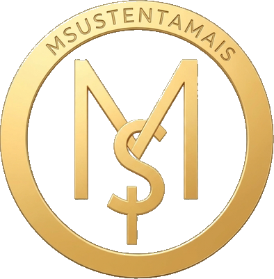
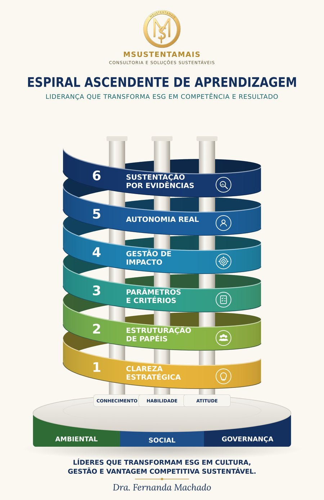

Diagnóstico de liderança ESG
Gratuito. Identificação do estágio atual e das necessidades de desenvolvimento.
Ideal para: organizações e profissionais que precisam saber por onde começar.
Fazer o diagnóstico gratuitoMSustentaMais

Transformamos ESG em competência, cultura e resultado, preparando líderes e gestores para compreender, implementar, gerir e sustentar a sustentabilidade nas organizações.
Conhecimento, Habilidade e Atitude aplicados ao ESG por meio da metodologia CEPGAS™.
Sua empresa pode ter indicadores, relatórios, metas, comitês, consultorias e compromissos ESG. Mas quem toma as decisões está preparado para transformar tudo isso em prática?
Quando o ESG não se incorpora às competências das lideranças, ele fica no relatório, sem chegar às decisões, aos processos e à cultura. A MSustentaMais atua nessa distância: entre saber o que precisa ser feito e desenvolver pessoas capazes de fazer acontecer.
ESG não falha por falta de boa intenção. Falha por falta de liderança preparada.
A MSustentaMais trabalha a partir de uma triangulação própria. O ESG deixa de ser só conteúdo e passa a ser competência aplicada à realidade da organização.
Conhecimento (saber-saber), Habilidade (saber-fazer) e Atitude (saber-ser). É o que se desenvolve em cada líder.
Ambiental, Social e Governança: a relação do eu com o outro e com o meio.
As seis competências e, ao mesmo tempo, o percurso para desenvolvê-las, sempre a partir de diagnósticos.
O ESG determina sobre o que se atua; o CHA, quais competências desenvolver; o CEPGAS™, como a transformação acontece.
O CEPGAS™ desenvolve no líder seis competências que funcionam como um sistema, para transformar princípios, critérios e compromissos ESG em decisões, processos e evidências. Falta uma, e o sistema trinca.
O objetivo não é tornar a empresa dependente da MSustentaMais. É desenvolver capacidade para que ela possa continuar.
Antes de propor soluções, é preciso compreender pessoas e organização. O primeiro passo é identificar como a liderança percebe, compreende e aplica a sustentabilidade nas decisões.
Uma avaliação inicial que identifica o estilo de liderança, as competências e os pontos de desenvolvimento para a atuação em ESG, e revela o maior gargalo da empresa.
Uma metodologia, diferentes formas de aplicação.
Gratuito. Identificação do estágio atual e das necessidades de desenvolvimento.
Ideal para: organizações e profissionais que precisam saber por onde começar.
Fazer o diagnóstico gratuitoPercurso estruturado de Conhecimentos, Habilidades e Atitudes aplicados ao ESG: cinco módulos, 15 encontros e cerca de 45 horas.
Ideal para: líderes, gestores, empresários e profissionais que decidem.
Quero saber maisA metodologia aplicada aos desafios, indicadores, processos e pessoas da própria organização.
Ideal para: empresas que querem transformar ESG em capacidade interna de gestão.
Falar sobre a minha empresaDiagnóstico, estruturação, acompanhamento e apoio à implementação de estratégias, projetos e processos.
Ideal para: empresas, propriedades rurais e organizações.
Fale com a MSustentaMaisSustentabilidade precisa ser demonstrada. Não basta dizer que funcionou: é preciso mostrar o que mudou.
Mais de 30 anos atuando com educação, desenvolvimento de pessoas, organizações e sustentabilidade, na academia, nas empresas e no território.
Sustentabilidade não nasceu para nós dentro de uma apresentação. Ela é vivida: na sala de aula, nas empresas, na produção e no território. Não existe sustentabilidade separando empresa, pessoas e meio ambiente.
Eu · Outro · Meio ambiente
Projetos de cultura, educação ambiental, patrimônio, turismo e pecuária sustentável.
Artigos, pesquisas, boas práticas e vídeos sobre ESG, liderança, educação ambiental, turismo, pecuária e desenvolvimento local.
Descubra gratuitamente o estágio atual da sua liderança e onde estão as oportunidades de desenvolvimento.
MSustentaMais · ESG que se sustenta em quem decide · Competência. Cultura. Resultado.
Educadora, pesquisadora e consultora em sustentabilidade. Vivo a sustentabilidade na academia, nas empresas e na gestão de uma fazenda, lugares onde o discurso não se sustenta sem prática.
Aprendi a olhar menos para o que se fala e mais para o que se decide.
Mais de 30 anos de docência, pesquisa e consultoria, da educação de jovens e adultos à pós-graduação. Serviços prestados ao SEBRAE, ao SENAC e ao SESI. Coautora de livros de educação ambiental e ex-colunista de jornal.
Chefe de Recursos Humanos na Bate Forte Atacado. Atuação na Aspen Consultoria, em São José do Rio Preto (SP), atendendo a concessionária Liban, e na Excel Consultoria, atendendo vários municípios de Mato Grosso do Sul.
Proprietária de uma fazenda pantaneira. Participou do programa Fazenda Pantaneira Sustentável a partir de 2018. Embaixadora Territorial do projeto Pecuária Tropical pelo Clima, da Morada Comum.
Criei o CEPGAS™, metodologia de desenvolvimento de competências de liderança em sustentabilidade e ESG. Participação no COMDEMA, no COMDER e na IGR Pantanal – Instância de Governança Regional do Pantanal.
Escrevo sobre sustentabilidade, território e Pantanal para os portais Zaki News, Cáceres no Ar e Centro-Oeste News.
Universidad de Santiago de Compostela, Espanha, 2019.
Universidad de Santiago de Compostela, Espanha, 2011.
Universidade Federal de Mato Grosso, 2007. Área de concentração Educação, Cultura e Sociedade.
Senac Mato Grosso, 2025, 80 horas, com imersão na Nova SBE, em Lisboa, Portugal.
Pós-graduação lato sensu, Universidade do Estado de Mato Grosso (UNEMAT), Campus de Cáceres, 2004.
Universidade Católica Dom Bosco, 1993.
Universidade Estadual de Maringá, 1992.
Fazer bem feito, ou não fazer.
Comunicar de forma clara, direta e honesta.
Ajudar sem gerar dependência.
A MSustentaMais é uma empresa de educação, consultoria, formação e desenvolvimento de soluções em sustentabilidade e ESG, voltada a pessoas, lideranças, organizações e territórios. Base em Cáceres, Mato Grosso, no Pantanal, com atendimento regional e nacional.
A MSustentaMais vai além de ajudar empresas a “ter ESG”: forma pessoas e cria projetos e processos capazes de fazer a sustentabilidade acontecer na governança, promovendo o ambiental e o social e aprimorando competências que permanecem depois da consultoria.
Ressignificar relações por meio da educação e do desenvolvimento de competências para transformar sustentabilidade em prática, gestão, cultura, impacto e valor.
Desenvolver competências em sustentabilidade e ESG por meio da educação, da sensibilização, da consultoria e de metodologias aplicadas, promovendo relações mais responsáveis entre pessoas, organizações, territórios e meio ambiente.
Ser referência no desenvolvimento de competências e soluções em sustentabilidade e ESG, integrando educação, pessoas, gestão, território e evidências.
Valores: liberdade, responsabilidade, verdade, justiça e cuidado com o coletivo.
Eu comigo. Eu com o outro. Nós com as organizações. As organizações com seus territórios. Todos com o meio ambiente.
Como usamos água, energia, solo e outros recursos? Como produzimos, consumimos e descartamos? Que impactos deixamos nos territórios?
Não existe sustentabilidade sem pessoas. O outro não está fora da organização: ele participa do valor e dos impactos que ela produz.
Quem decide, com quais critérios, quem participa e quem responde. A governança faz a sustentabilidade não depender só da boa intenção de alguém.
A educação é o elo. Não como simples transmissão de informação, mas como sensibilização e desenvolvimento de competências, para que as pessoas possam compreender, decidir, aplicar, avaliar e assumir a responsabilidade pelos impactos das suas decisões.
Não basta saber mais sobre ESG. É preciso saber interpretar, decidir, fazer, demonstrar e sustentar.
Fernanda de Arruda Machado, fundadora da MSustentaMais e criadora do CEPGAS™. Educadora, pesquisadora e consultora, com mais de 30 anos de atuação, proprietária de uma fazenda pantaneira, Embaixadora Territorial do projeto Pecuária Tropical pelo Clima, da Morada Comum, e gestora da IGR Pantanal – Turismo Sustentável.
Mais de três décadas de educação, pesquisa e consultoria, e um método que amadureceu na prática.
Coordenação do programa de EJA no SESI-MT e capacitação de professores.
Treinamentos de liderança, atendimento e desenvolvimento de equipes, e consultoria em turismo e arranjos produtivos locais.
A proposta de implantação do turismo na Fazenda Santa Fé do Machadinho, feita como monografia, torna-se projeto real e é apresentada em eventos nacionais até 2005.
Projetos com comunidades pantaneiras, em parceria com a UFMT e com apoio da FAPEMAT.
A fazenda passa a participar do programa Fazenda Pantaneira Sustentável.
O trabalho de formação de líderes, que já era aplicado, evolui para o CEPGAS™.
A empresa é constituída em Cáceres para reunir, sob uma marca, a educação, a consultoria, o CEPGAS™ e os projetos territoriais e culturais.
Todos partem do mesmo método. O que muda é o formato.
A base é Cáceres, em Mato Grosso, e o atendimento é regional e nacional, com experiência construída na academia, nas empresas e no território.
Cada lugar tem identidade, cultura, ambiente e saberes próprios. Por isso, partimos sempre de um diagnóstico do território, e não de um modelo pronto.
Sede da empresa e da Fazenda Pantaneira Santa Fé do Machadinho, laboratório vivo onde a metodologia é praticada antes de ser ensinada. Atuação na IGR Pantanal – Turismo Sustentável e nos conselhos municipais COMDER e COMDEMA.
Como Embaixadora Territorial do projeto Pecuária Tropical pelo Clima, da Morada Comum, diagnóstico territorial com produtores, mulheres produtoras e juventude em Cáceres e Vila Bela da Santíssima Trindade. Educação ambiental com as comunidades pantaneiras de Mimoso e São Pedro de Joselândia. Serviços prestados ao SEBRAE, ao SENAC e ao SESI.
Atendimento a empresas e organizações de todo o país, com experiência em consultoria em São Paulo e em vários municípios de Mato Grosso do Sul. O diagnóstico de liderança ESG do CEPGAS™ é gratuito e feito on-line, de qualquer lugar. A trajetória acadêmica e de pesquisa soma atuação em cinco países.
Quatro linhas de trabalho, com o mesmo princípio: partir do diagnóstico e deixar a competência dentro da organização.
Com o CEPGAS™ como produto-âncora: seis competências, cinco módulos e acompanhamento.
Diagnóstico, planejamento, estruturação, acompanhamento e avaliação.
Cursos, oficinas, palestras, programas corporativos e processos de sensibilização.
Elaboração, execução, acompanhamento e avaliação de projetos de sustentabilidade, educação ambiental, turismo, cultura e desenvolvimento local.
Gestão da Instância de Governança Regional do turismo no Pantanal.
Representação da sociedade nos conselhos municipais de desenvolvimento rural e de meio ambiente.
Embaixadora Territorial do projeto Pecuária Tropical pelo Clima, da Morada Comum, no território de Cáceres e Vila Bela da Santíssima Trindade.
O caminho que a MSustentaMais escolheu para crescer: o que oferece, para quem, como trabalha e o que vem pela frente.
Muitas organizações já sabem o que é ESG, mas não conseguem transformá-lo em decisão, prática e evidência. O relatório existe, o discurso existe, e a sustentabilidade continua dependendo da boa intenção de alguém.
Desenvolvemos pessoas e organizações para transformar sustentabilidade em gestão, impacto e resultado.
A metodologia é aplicada na Fazenda Pantaneira Santa Fé do Machadinho antes de ser ensinada.
O ESG determina sobre o que se atua; o CHA, quais competências desenvolver; o CEPGAS™, como a transformação acontece.
Critérios escritos, papéis definidos e evidências organizadas continuam na organização depois da consultoria.
O CEPGAS™ é o produto-âncora: cinco módulos, 15 encontros e cerca de 45 horas, sempre guiados por diagnósticos.
Consultoria estratégica individual CEPGAS™, mentoria individual e corporativa.
Diagnóstico, planejamento, estruturação, acompanhamento e avaliação.
Workshops in-company, cursos, oficinas e palestras.
Projetos culturais, de educação ambiental e turismo, e vivências na fazenda.
O líder ou a organização faz o diagnóstico, que revela o estilo de liderança e o maior gargalo.
Uma conversa direta para entender o cenário e dizer, com honestidade, se o trabalho faz sentido.
O percurso é construído em cima das decisões reais, com exercícios e plano de ação.
O resultado fica registrado em critérios, papéis e indicadores que a organização mantém.
O método em vídeo, no ritmo do líder.
Reconhecimento formal da formação.
Projetos como Cáceres em Sentidos, que unem cultura, educação ambiental, turismo e setor criativo.
Formação de líderes em ESG por competências: Conhecimento, Habilidade e Atitude. O método começa por quem decide, e não pelo relatório.
Escolha uma faixa para ler o que ela significa. Depois, retire-a do sistema.

As seis competências não são degraus isolados. Elas sobem juntas, numa espiral contínua: cada volta retoma a anterior num nível mais alto.
Líderes que transformam ESG em cultura, gestão e vantagem competitiva sustentável.
O diagnóstico de liderança ESG identifica o seu estilo predominante de liderança. O CEPGAS™ reconhece o que já é força e trabalha onde você mais precisa crescer.
Há ainda perfis que combinam dois estilos e um perfil equilibrado. O diagnóstico mostra o seu.
É o roteiro individual do líder. Parte do diagnóstico, mostra qual das seis competências está mais fraca e define, para cada uma, o que fazer, quem faz, com qual critério e com qual evidência.
Você descobre o seu estilo de liderança e o maior gargalo do ESG da sua empresa.
Reconhecemos o que já é força e mostramos o nível de cada dimensão do CHA.
A consultoria segue em cinco módulos, sempre sobre as decisões reais da sua mesa.
O que foi decidido fica registrado e a equipe segue sem depender de mim.
A mesma situação recebe a mesma resposta, e você sabe explicar por quê.
Para cada tema, alguém decide e alguém executa, com nome.
Cada coisa afirmada em público tem uma prova do lado de dentro.
Não é curso. Não é selo para pendurar na parede. E não substitui a consultoria técnica que mede os seus dados. Ela continua importante. O CEPGAS™ prepara quem decide para sustentar esses dados na frente de qualquer pessoa.
O que já fizemos, o que está em andamento e as propostas encaminhadas. Cultura, educação ambiental, patrimônio, turismo e pecuária sustentável, sempre a partir do território.
Prefeituras, escolas, associações, empresas e produtores: conte a ideia, o lugar e as pessoas envolvidas. A gente conversa sobre o caminho, do diagnóstico à prestação de contas.
Não existe sustentabilidade sem as pessoas que dão sentido ao lugar. No Pantanal, o jeito de fazer, de comer, de contar e de celebrar também é manejo do ambiente.
Ruas, ilhas e paisagens de Cáceres guardam a história de quem viveu ali. Restaurar esses espaços é devolver à cidade um lugar de convivência.
Mestres de tradição, artesãos, cozinheiras e pantaneiros guardam conhecimentos que nenhum manual substitui. Escutá-los é parte do método.
Educação ambiental, turismo e setor criativo caminham juntos quando a cultura local é reconhecida e se transforma em projeto.
Antes de propor um modelo pronto, olhamos para o território. É o mesmo princípio que orienta a Gestão de impacto no CEPGAS™.
Elaboração de projetos, oficinas para professores, parcerias e palestras sobre cultura, educação ambiental e turismo.
Não é um capítulo do relatório. Se a decisão não é coerente, o impacto aparece.
A Fazenda Pantaneira Santa Fé do Machadinho participou, a partir de 2018, do programa Fazenda Pantaneira Sustentável.
Desde 2003, projetos de educação ambiental com comunidades pantaneiras, como Mimoso e São Pedro de Joselândia, com a UFMT e o apoio da FAPEMAT.
Como Embaixadora Territorial do projeto Pecuária Tropical pelo Clima, da Morada Comum, conduzi o diagnóstico territorial e rodas de conversa com produtores, mulheres produtoras e juventude em Cáceres e Vila Bela da Santíssima Trindade.
Minha dissertação de mestrado em Educação Ambiental tratou da sustentabilidade florestal em Cáceres, em Mato Grosso. Em 2005, apresentei em Fortaleza o trabalho “A Água na Percepção Pantaneira de Meio Ambiente”.
O ESG não nasceu num relatório. Vem de mais de cinquenta anos de decisões sobre como produzir e conviver. Veja onde a minha trajetória cruza essa história.
Práticas simples, que vêm do território e das decisões de liderança, e que qualquer empresa pode adaptar. Cada uma diz como fazer e qual prova fica.
Conte o que a sua empresa ou a sua comunidade faz. As práticas que ajudarem outros líderes entram aqui.
O que publico sobre liderança ESG, educação ambiental, cultura e sustentabilidade, as matérias em que o trabalho apareceu e os vídeos.
Uma conversa privada e direta, sem apresentação genérica. Você me conta o cenário da sua empresa, e eu digo, com honestidade, se o meu trabalho faz sentido para você agora.